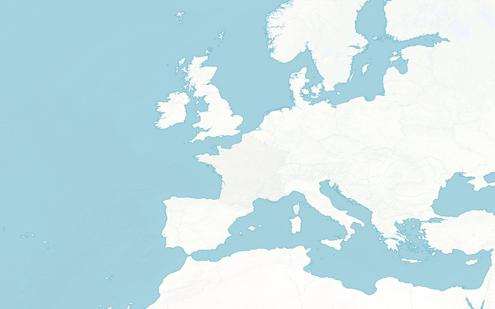

<!doctype html>
<html lang="en">
<head>
    <meta charset="utf-8">
    <title>Sightwind</title>

    <style>
        body {
            margin: 0;
        }
        .container {
            position: absolute;
            width: 990px;
            height: 618px;
        }
        canvas {
            position: absolute;
            z-index: 20;
            pointer-events: none;
        }
        #map {
            position: absolute;
            z-index: 10;
            width: 100%;
            height: 100%;
        }
        svg {
            position: absolute;
            z-index: 0;
            fill: none;
        }
        .graticule {
          fill: none;
          stroke: #777;
          stroke-width: .5px;
          stroke-opacity: .5;
        }

        .country {
            stroke: #aaa;
            pointer-events: all;
            fill: #110;
          /*fill: none;*/
        }
        .country:hover {
            fill: #220;
        }

        .boundary {
          fill: none;
          stroke: #fff;
          stroke-width: .5px;
          stroke-linejoin: round;
          stroke-linecap: round;
        }
    </style>
</head>
<body>
    <div class="container">
        <svg></svg>
        <!--  -->
    </div>

    <!-- <script src="winds_cache.js"></script> -->
    <script src="winds_cache5.js"></script>
    <!-- // <script src="data.php?domain=eu12&mp;run=2013112918"></script> -->
    <script src="js/d3.js"></script>
    <script src="js/topojson.v1.js"></script>

    <script>
        'use strict';


        var now = Date.now(),
            timeDiff,
            lastTick = Date.now();

        var options = {
            speedFactor: 0.04,
            lifeTime: 1000,
            lineWidth: 1,
            colorAlpha: 0.5,
            globalAlpha: 0.94,
            color: [
                '71,132,255',
                '110,118,233',
                '149,105,211',
                '189,92,190',
                '228,79,168',
                '255,71,154'
            ]
        };


        var t, s;

        var mouseBuffer = {x: 0, y: 0};


        var width = 1500,
            height = 800;

        var grid_center = {lat: 47.5, lon: 4};

        var projection = d3.geo.conicConformal()
            .scale(width)
            .center([47.5, 4])
            .rotate([-grid_center.lon, 0])
            .parallels([47.5, 47.5])
            .translate([width, height])
            .precision(.1);

        // var projection = d3.geo.mercator()
        //     .scale(width)
        //     .center([47.5, 4])
        //     .rotate([-grid_center.lon, 0])
        //     .translate([width, height])
        //     .precision(.1);


        // var projection = d3.geo.mercator();

        var path = d3.geo.path()
            .projection(projection);

        var zoom = d3.behavior.zoom()
            .center([width/2, height/2])
            // .scaleExtent([0, 6])
            .on("zoom", move);


        var graticule = d3.geo.graticule()
            .extent([[-90,0], [90, 90]])
            .step([5, 5]);

        var svg = d3.select("svg")
            .attr("width", width)
            .attr("height", height)
            .append("g")
                .attr("transform", "translate(" + width / 2 + "," + height / 2 + ")")
                .call(zoom)
        var g = svg.append('g');


        // var center = projection([grid_center.lon, grid_center.lat]),
        //     bottomLeft = projection([-24.6064, 26.3683]),
        //     topRight = projection([4 + (4 + 24.6064), (47.5 + (47.5 - 26.3683))]); // 48, 60


        var countries = g.append('g').attr('class', 'countries');

        var graticulePath = g.append("path")
            .datum(graticule)
            .attr("class", "graticule")
            .attr("d", path);


        var posTopLeft = projection(data_meta.topLeft),
            posBottomRight = projection(data_meta.bottomRight);

        var canvasDim, canvasOffset;
        move();

        g.append('polyline')
            .attr('points', [
                    projection(data_meta.topLeft),
                    projection(data_meta.topRight),
                    projection(data_meta.bottomRight),
                    projection(data_meta.bottomLeft),
                    projection(data_meta.topLeft)
                ].map(function (item) { return item.toString(); }).join(' '))
            .attr('stroke', '#fff');


        d3.json("js/world-50m.json", function(error, world) {

            var neighbors = topojson.neighbors(world.objects.countries.geometries);

            countries.selectAll('path')
                .data(topojson.feature(world, world.objects.countries).features)
                .enter().append('path')
                    .attr('class', 'country')
                    .attr('d', path);

        });


        function move() {


            if (d3.event) {
                t = d3.event.translate
                s = d3.event.scale;
            } else {
                t = [0,0];
                s = 1;
            }

            var originalT = [t[0], t[1]];

            // posTopLeft = projection([data_meta.topLeft.lon, data_meta.topLeft.lat]);
            // posBottomRight = projection([data_meta.bottomRight.lon, data_meta.bottomRight.lat]);

            canvasDim = {
                width: (posBottomRight[0] - posTopLeft[0]) * s,
                height: -(posTopLeft[1] - posBottomRight[1]) * s
            };
            canvasOffset = {
                x: width / 2 + posTopLeft[0] * s + t[0],
                y: height / 2 + posTopLeft[1] * s + t[1]
            };

            // t[0] = clamp(t[0] - mouseBuffer.x, (width - canvasDim.width) / 2, -(width - canvasDim.width) / 2);
            // t[1] = clamp(t[1] - mouseBuffer.y, (height - canvasDim.height) / 2, -(height - canvasDim.height) / 2);
            // if (width > canvasDim.width) {
            //     t[0] = 0;
            // }
            // if (height > canvasDim.height) {
            //     t[1] = 1;
            // }
            mouseBuffer.x = originalT[0] - t[0];
            mouseBuffer.y = originalT[1] - t[1];
            g.style("stroke-width", 1 / s).attr("transform", "translate(" + t + ")scale(" + s + ")");

            graticulePath.style('stroke-width', 1/s);

            canvasOffset = {
                x: width / 2 + posTopLeft[0] * s + t[0],
                y: height / 2 + posTopLeft[1] * s + t[1]
            };


            options.lifeTime = 1000 * s;
        }


        var container = document.querySelector('.container'),
            canvas = [],
            ctx = [],
            buffer = document.createElement('canvas'),
            bufferCtx = buffer.getContext('2d');

        // Create canvas layers
        for (var i = 0; i < 6; i++) {
            canvas[i] = document.createElement('canvas');
            document.querySelector('.container').appendChild(canvas[i]);
            ctx[i] = canvas[i].getContext('2d');
        }

        var tempMin = Math.min.apply(null, data_temp.map(function(item) {
            return Math.min.apply(null, item);
        })) - 0.1;
        var tempMax = Math.max.apply(null, data_temp.map(function(item) {
            return Math.max.apply(null, item);
        }));

        // Find temp bounds
        var tempBounds = [],
            tempStep = (tempMax - tempMin) / canvas.length;
        for (var i = 0; i < canvas.length; i++) {
            tempBounds.push({
                low: tempMin + tempStep * i,
                high: tempMin + tempStep * (i + 1)
            });
        }


        function resizeCanvas() {
            var windowAspectRatio = window.innerWidth / window.innerHeight,
                containerAspectRatio = container.clientWidth / container.clientHeight;

            if (windowAspectRatio > containerAspectRatio) {
                container.style.width = (window.innerHeight * containerAspectRatio) + 'px';
                container.style.height = window.innerHeight + 'px';
            } else {
                container.style.width = window.innerWidth + 'px';
                container.style.height = (window.innerWidth / containerAspectRatio) + 'px';
            }

            // TODO..........
            container.style.width = width + 'px';
            container.style.height = height + 'px';


            for (var i = 0; i < canvas.length; i++) {
                canvas[i].width = document.querySelector('.container').clientWidth;
                canvas[i].height = document.querySelector('.container').clientHeight;
                // ctx[i].setTransform(canvasMapWidth / canvas[i].width, 0, (canvas[i].width - canvasMapWidth) / 2,
                                    // canvasMapHeight / canvas[i].height, 0, (canvas[i].height - canvasMapHeight) / 2);
            }

            buffer.width = document.querySelector('.container').clientWidth;
            buffer.height = document.querySelector('.container').clientHeight;
            svg.attr("width", buffer.width);
            svg.attr("height", buffer.height);
            width = buffer.width;
            height = buffer.height;

        }
        resizeCanvas();
        window.addEventListener('resize', resizeCanvas);


        function clamp(val, min, max) {
            return Math.min(Math.max(val, min), max);
        }


        function getVelocityXAt(x, y) {
            y = canvasDim.height - y;
            var xPos = clamp(x / canvasDim.width, 0, 1) * (data_wind_u[0].length - 1);
            var yPos = clamp(y / canvasDim.height, 0, 1) * (data_wind_u.length - 1);
            return data_wind_u[Math.floor(yPos)][Math.floor(xPos)];
        }
        function getVelocityYAt(x, y) {
            y = canvasDim.height - y;
            var xPos = clamp(x / canvasDim.width, 0, 1) * (data_wind_v[0].length - 1);
            var yPos = clamp(y / canvasDim.height, 0, 1) * (data_wind_u.length - 1);
            return -data_wind_v[Math.floor(yPos)][Math.floor(xPos)];
        }

        function getDataCoordX(x) {
            return Math.floor(clamp((x - canvasOffset.x) / canvasDim.width, 0, 1) * (data_wind_v[0].length - 1));
        }
        function getDataCoordY(y) {
            return Math.floor(clamp((y - canvasOffset.y) / canvasDim.height, 0, 1) * (data_wind_u.length - 1));
        }


        function Particle(x, y) {
            this.reset(now + Math.floor(Math.random() * options.lifeTime));
            // this.dataCoords = {x: 0, y: 0};
        }
        Particle.prototype.reset = function (lifeTime) {
            this.x = clamp(canvasOffset.x, 0, width) + Math.floor(Math.random() * clamp(canvasDim.width, 0, width));
            this.y = clamp(canvasOffset.y, 0, height) + Math.floor(Math.random() * clamp(canvasDim.height, 0, height));
            this.refreshCoords();
            this.lifeTime = lifeTime || now + options.lifeTime;
        }
        Particle.prototype.refreshCoords = function () {
            // this.dataCoordX = getDataCoordX(this.x);
            // this.dataCoordY = getDataCoordY(canvas[0].height - this.y);
            var pos = projection.invert([this.x - canvasDim.width/2 - t[0]/s, canvasDim.height/2 - this.y - t[1]/s]);
            this.dataCoordX = Math.floor(clamp((pos[0] - data_meta.topLeft[0]) / (data_meta.bottomRight[0] - data_meta.topLeft[0]), 0, 1) * (data_wind_v[0].length - 1));
            this.dataCoordY = Math.floor(clamp((data_meta.topLeft[1] - pos[1]) / (data_meta.topLeft[1] - data_meta.bottomRight[1]), 0, 1) * (data_wind_v.length - 1));
        }
        Particle.prototype.tick = function () {
            if (this.x > canvasOffset.x + canvasDim.width || this.x < canvasOffset.x ||
                this.y > canvasOffset.y + canvasDim.height || this.y < canvasOffset.y ||
                this.lifeTime < now) {
                this.reset();
            }
        }
        Particle.prototype.nextPositionX = function () {
            return this.x = this.x + data_wind_u[this.dataCoordY][this.dataCoordX] * timeDiff * options.speedFactor;
        }
        Particle.prototype.nextPositionY = function () {
            return this.y = this.y - data_wind_v[this.dataCoordY][this.dataCoordX] * timeDiff * options.speedFactor;
        }

        var particles = [];
        for (var i = 0; i < 5000; i++) {
            particles[i] = new Particle();
        }


        function render() {

            now = Date.now();
            timeDiff = (Date.now() - lastTick) / 16; // timeDiff should be near 1 at 60fps
            lastTick = now;

            requestAnimationFrame(render);

            bufferCtx.globalAlpha = options.globalAlpha;

            for (var j = 0; j < particles.length; j++) {
                particles[j].refreshCoords();
                particles[j].tick();
            }

            for (var i = 0; i < canvas.length; i++) {

                bufferCtx.clearRect(0, 0, buffer.width, buffer.height);
                bufferCtx.drawImage(canvas[i], 0, 0);
                ctx[i].clearRect(0, 0, canvas[i].width, canvas[i].height);
                ctx[i].drawImage(buffer, 0, 0);

                ctx[i].beginPath();

                    ctx[i].lineWidth = options.lineWidth;
                    ctx[i].strokeStyle = 'rgba(' + options.color[i] + ',' + options.colorAlpha + ')';

                    for (var j = 0; j < particles.length; j++) {
                        var temp = data_temp[particles[j].dataCoordY][particles[j].dataCoordX];
                        if (tempBounds[i].low < temp && temp <= tempBounds[i].high) {
                            ctx[i].moveTo(particles[j].x, particles[j].y);
                            ctx[i].lineTo(particles[j].nextPositionX(), particles[j].nextPositionY());
                        }
                    }

                ctx[i].stroke();

            }

            ctx[0].clearRect(0, 0, 50, 10);
            ctx[0].fillText(Math.round(1000 / (timeDiff * 16) * 10) / 10, 0, 9);

        }
        render();


    </script>
</body>
</html>